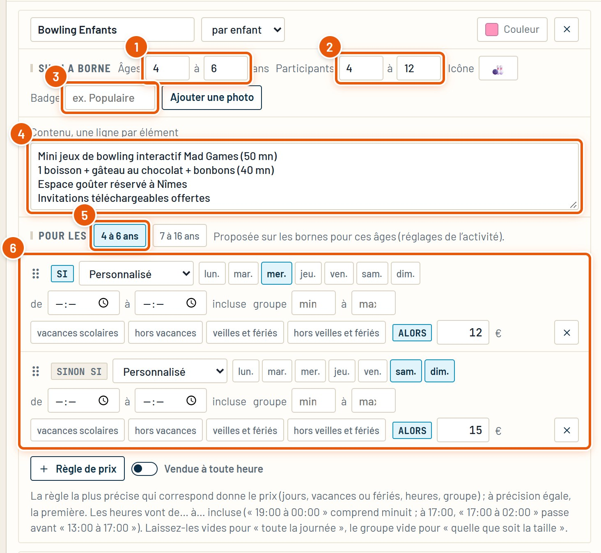
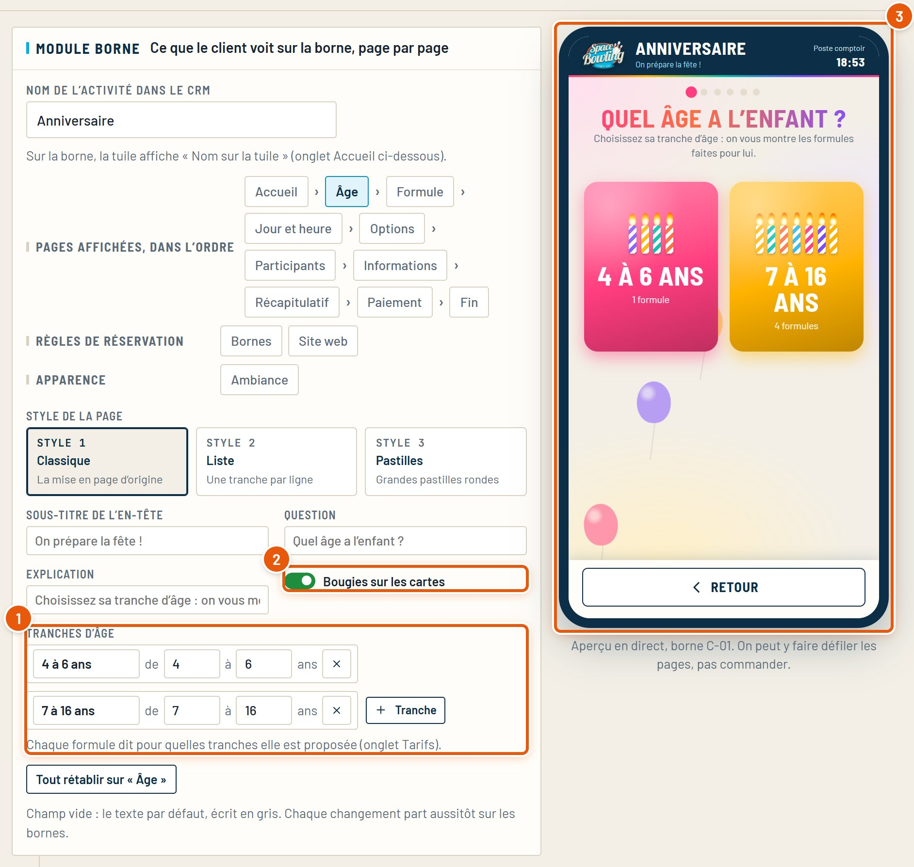
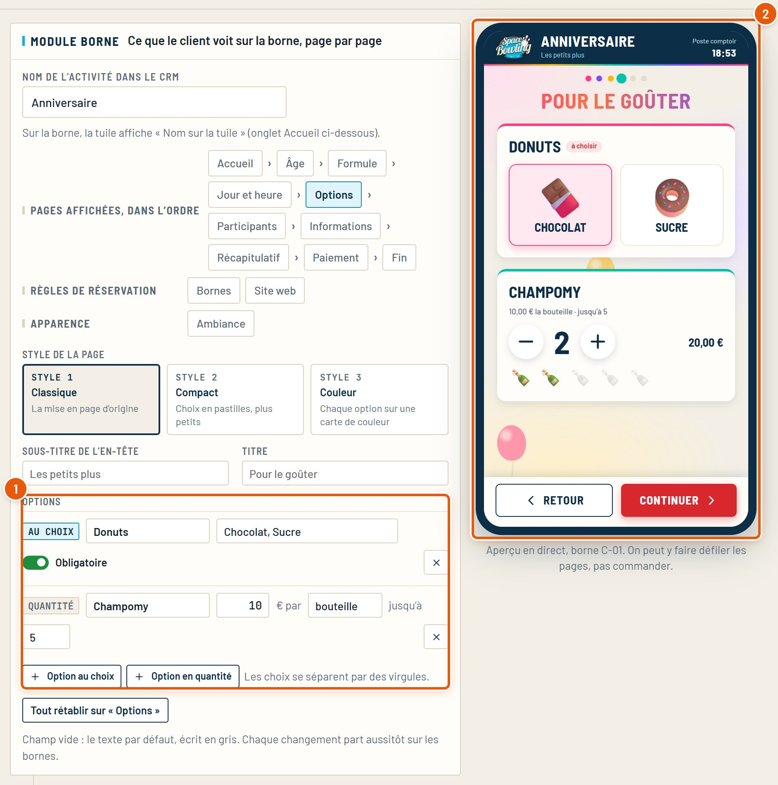
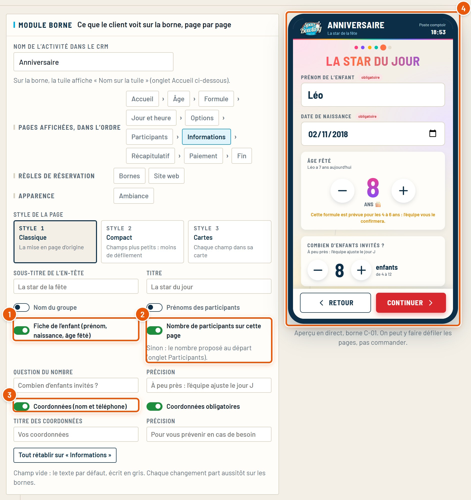
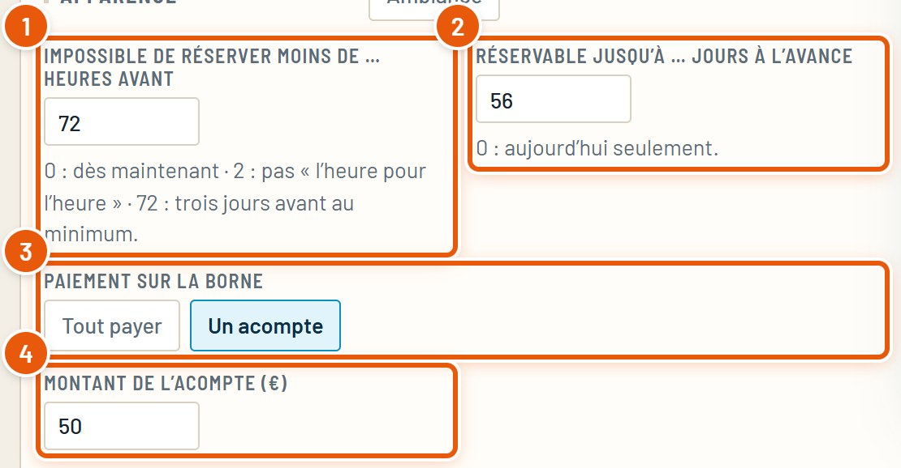
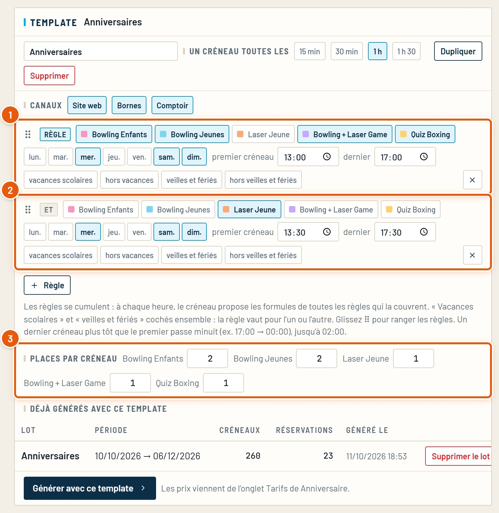
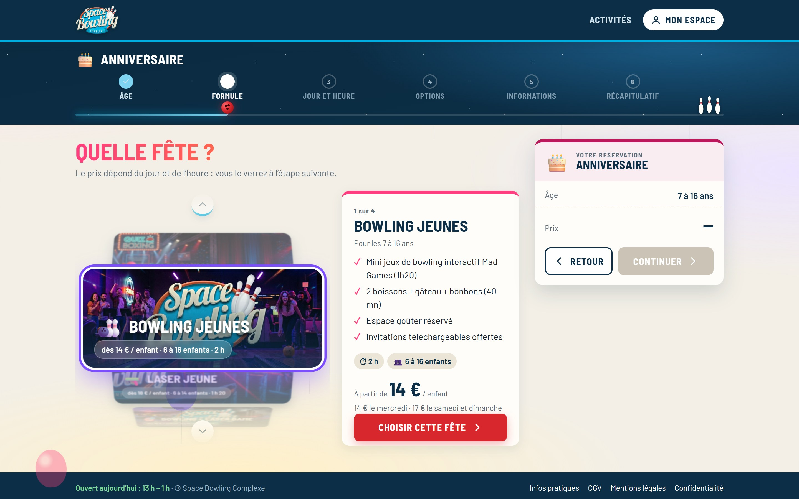
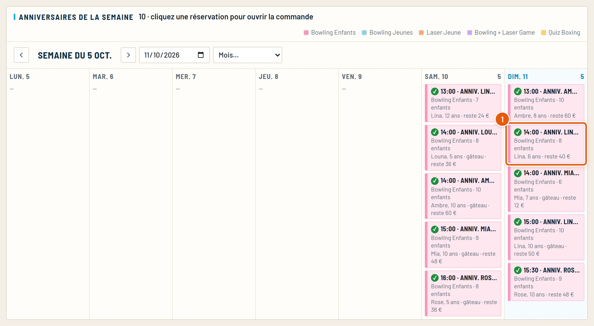

Guide détaillé
Les anniversaires
Les formules et leurs prix, les tranches d’âge, les options du goûter, ce que le client remplit, l’acompte, les places par créneau, la roue du site et le suivi des fêtes.
Octobre 2026SpaceBowling Engine
Guide détaillé
Les formules et leurs prix, les tranches d’âge, les options du goûter, ce que le client remplit, l’acompte, les places par créneau, la roue du site et le suivi des fêtes.
L’anniversaire est une formule combinée : un forfait qui enchaîne d’autres activités (bowling, laser…), avec un goûter et des options. Il se réserve sur le site, les bornes et au comptoir, avec un acompte.
Ce qu’il faut regarder est entouré en orange et numéroté.
Quelques règles propres aux anniversaires, à garder en tête avant de les régler.
| Sujet | Comment ça marche |
|---|---|
| Places | Pas de salle à réserver : chaque créneau propose un nombre de fêtes par formule (ex. 2 « Bowling Enfants » à 14:00), fixé dans le template (chapitre 7). |
| Formules | Chacune a son prix par enfant, ses âges, son nombre d’enfants, son contenu et sa photo. Le client ne voit que les formules prévues pour l’âge de l’enfant. |
| Délai | Réservation au plus tard 72 heures avant, jusqu’à 8 semaines à l’avance (réglable). |
| Paiement | Un acompte (50 €) à la réservation ; le reste se règle sur place le jour de la fête. |
| Jours | Mercredi, samedi et dimanche, dans le template du centre. |
Anniversaire › onglet Tarifs. Une formule par cadre, comme pour toute activité, avec en plus la ligne « Sur la borne » et les tranches d’âge.

Le détail des règles de prix (jours, vacances, fériés) est dans le guide Prix et horaires.
Sandbox › Activités du centre › Anniversaire › page Âge. C’est la première question posée au client.

Une tranche sans formule n’a pas d’intérêt : vérifiez, dans les Tarifs, que chaque tranche a au moins une formule (« Pour les »).
Même bloc, page Options : ce que le client ajoute à la fête (parfum des donuts, bouteilles de champomy…).

Même bloc, page Informations : la fiche de l’enfant, le nombre d’invités et les coordonnées du parent.

Même bloc, groupe Règles de réservation : l’onglet Bornes, puis l’onglet Site web pour le site.

L’onglet Site web a son propre acompte en ligne (50 € pour les anniversaires). Le reste se règle sur place le jour de la fête ; la fiche de la réservation affiche « reste à payer ».
Générateur de créneaux › Anniversaire › Templates. Comme toute activité, avec en plus le nombre de fêtes par créneau.

Les places d’un anniversaire se comptent par formule et par créneau. Quand elles sont prises, la formule disparaît de ce créneau sur la borne et le site. Regénérez la période après avoir changé ces nombres.
Sur le site, les formules anniversaire tournent dans une roue 3D, avec leur photo. On peut préférer des cartes.

Les photos de la roue sont celles des formules (Tarifs › Ajouter une photo).
Anniversaire › onglet Planning : les fêtes de la semaine, jour par jour.

Les cas les plus courants, et où regarder.
| Ce que vous voyez | À vérifier |
|---|---|
| Aucune formule pour un âge | Les formules ont bien cette tranche cochée (« Pour les », onglet Tarifs). |
| « Plus de créneau libre » pour une formule | Les places par créneau du template, les jours générés, le délai de 72 heures et l’horizon de 8 semaines. |
| Le client ne peut pas mettre plus d’enfants | Les participants maximum de la formule (ligne « Sur la borne »). |
| L’acompte n’est pas le bon | Module › Bornes (borne) et Module › Site web (site). |
| Une option ne s’affiche pas | Module › page Options ; une option « au choix » a au moins un choix. |
Tous les guides du CRM, refaits à partir du vrai logiciel. Ils se trouvent dans le dossier docs.